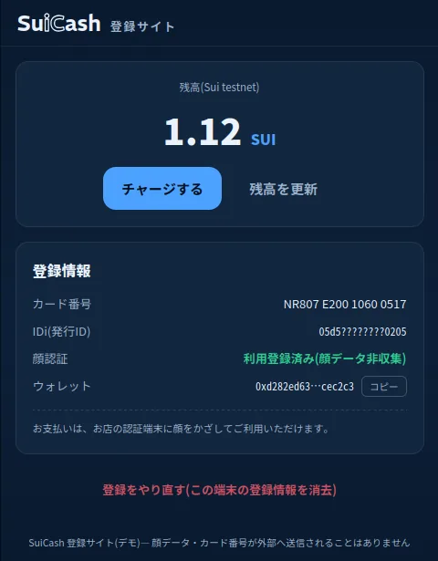
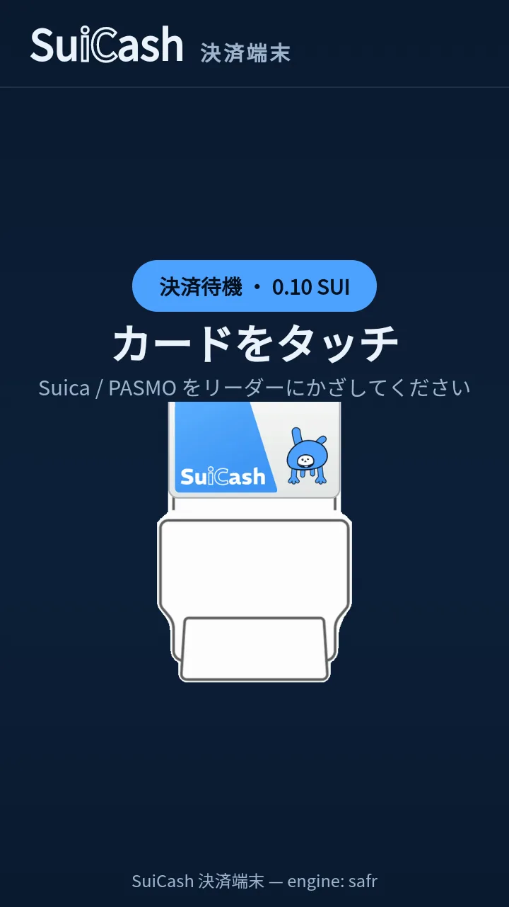
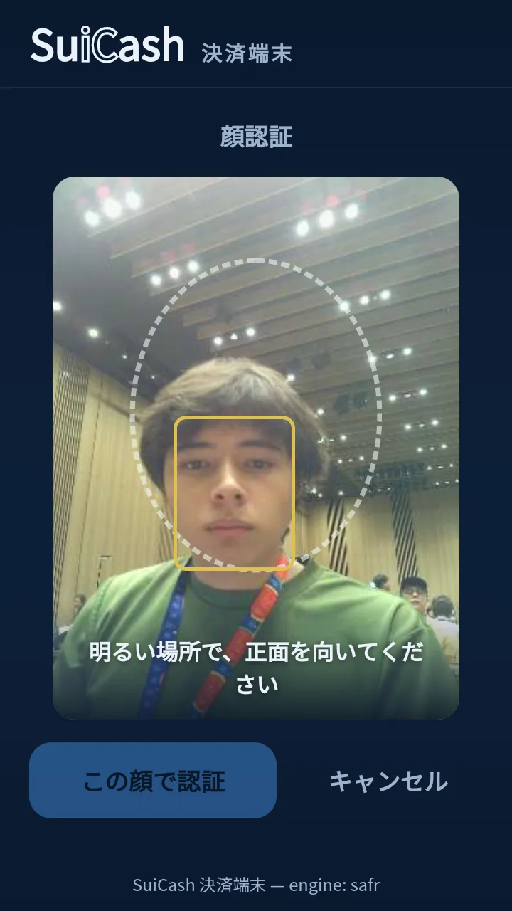
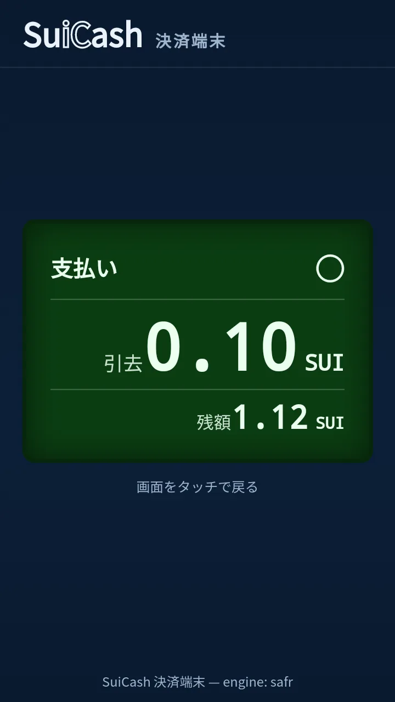
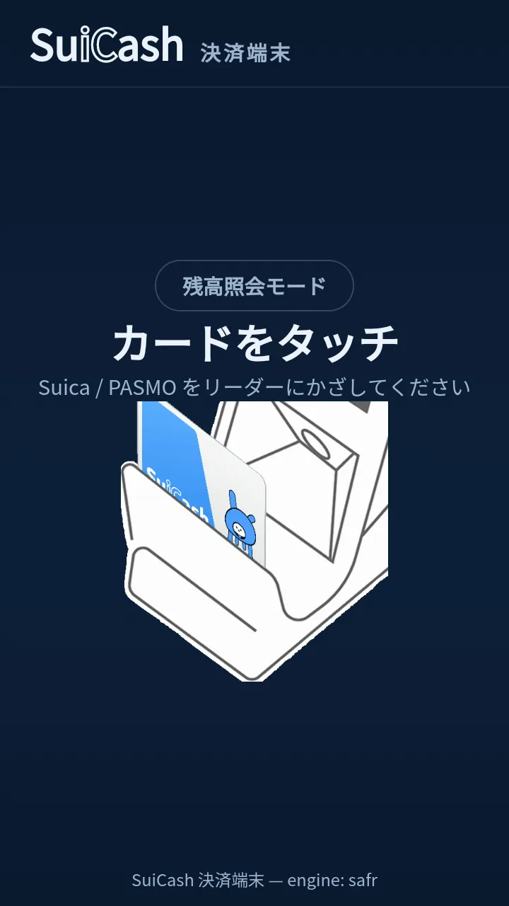
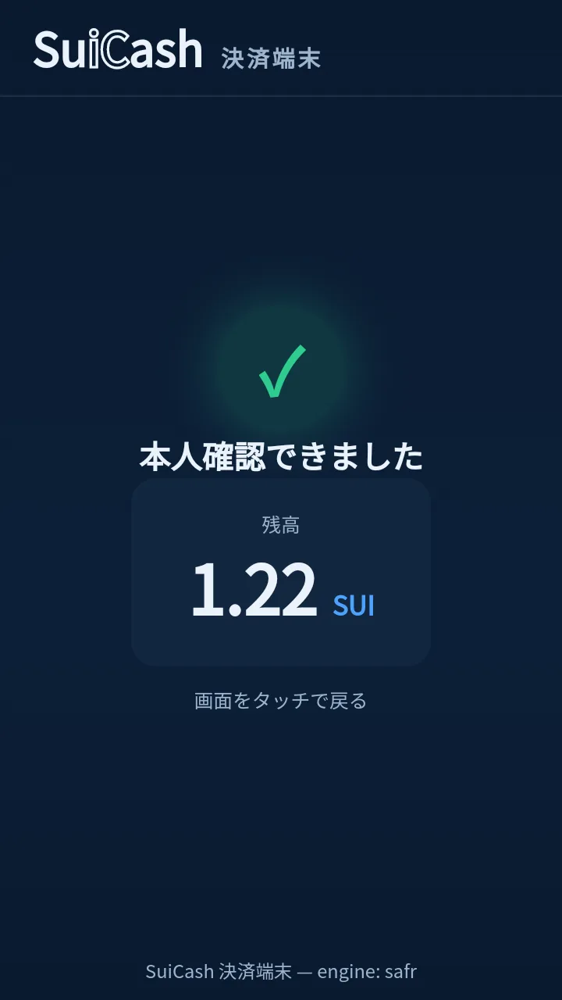

Why SuiCash
FeliCa は共通鍵暗号、ブロックチェーンは公開鍵暗号。本来交わらない 2 つの技術を、オラクルとゼロ知識証明でつなぎます。
FeliCa カードを実際に持っていることをオンチェーンで検証。カードの真正性を根拠に、Sui 上のスマートコントラクトが動きます。
FeliCa は日本で広く普及した技術。財布にある交通系 IC カードが、そのまま暗号資産の入口になります。
日本で暗号資産はまだ日常から遠い存在。慣れ親しんだ「タッチ」の体験に載せることで、その距離を縮めます。
Features
カード固有の IDi を軸に、登録からチャージ、支払いまでを一気通貫で提供します。
スマホの登録サイトで、顔とカードの IDi を紐づけて Sui に登録。顔データそのものが外部へ送信されることはありません。
IDi をシードに Account Abstraction ウォレットを自動生成。秘密鍵もシードフレーズも、利用者は一切管理しません。
送金先はカードの IDi だけ。ルータが対応するウォレットを解決して着金します。アドレスのコピペはもういりません。
顔と IDi のゼロ知識証明（Groth16）でウォレットをアンロック。カードの所持と本人の顔、二要素で守ります。
How it works
端末へのワンタッチから Sui 上での送金完了まで、検証の連鎖でつながっています。
決済端末が FeliCa カードと通信し、カード固有の IDi を読み取ります。利用者の操作はこれだけです。
FeliCa オラクルがカードとの相互認証で「本物のカードがいまここにある」ことを確かめ、結果に署名します。
顔認証と IDi から Groth16 証明を生成。オンチェーンの検証器が通れば、ウォレットの鍵が開きます。
IDi から導出された AA ウォレットが送金を実行。残高も履歴も、すべて Sui のオンチェーンに記録されます。
Screens
登録サイトと決済端末 Hi-CARA の実際の画面です。






Under the hood
モノレポの中に、物理カードと Sui をつなぐすべての部品が入っています。
FeliCa 証明の検証・ZK 検証器・ゲートを担う Sui コントラクト群。
カードとの相互認証を行い、検証結果に署名する FeliCa オラクル。
顔 × IDi の Groth16 証明を生成するプルーバ。
決済端末 Hi-CARA で動く顔認証・タッチ決済 UI。
利用者がスマホで顔とカードを登録するウェブサイト。
RC-S380 リーダと実物のカードで検証した PoC。
ちいきもは、ペンギンと「なにか」のキメラ。左右で長さの違うフリッパー、低い重心、顔の幅より大きく裂けた口。SuiCash のカード券面の右側で、いつも決済を見守っています。